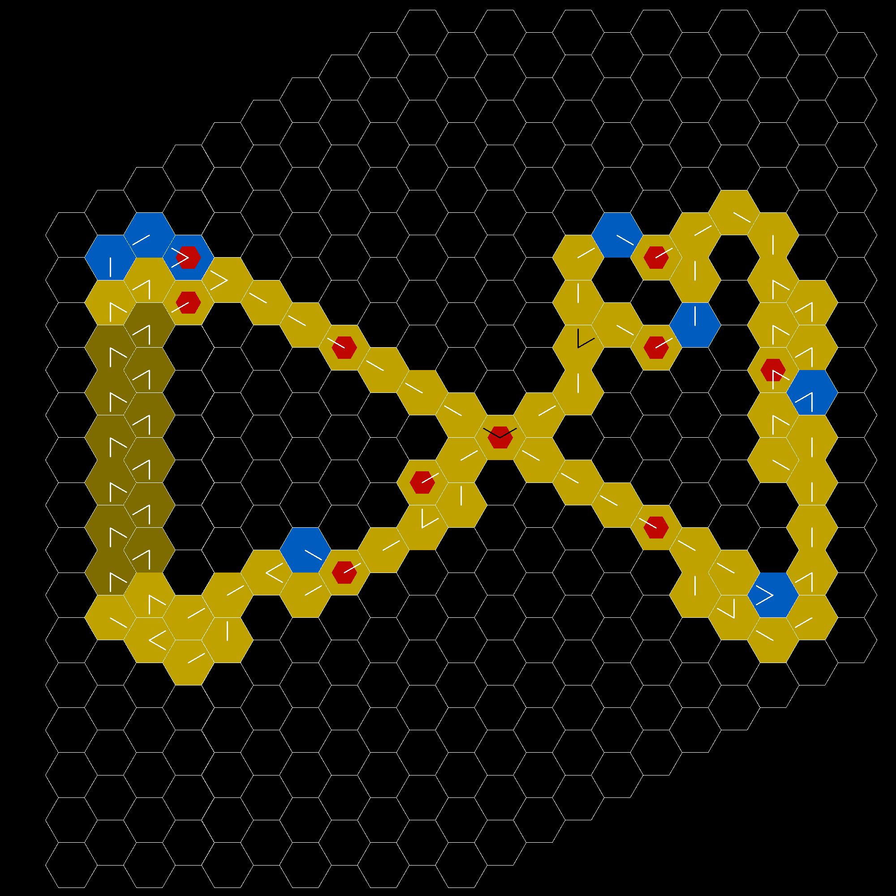
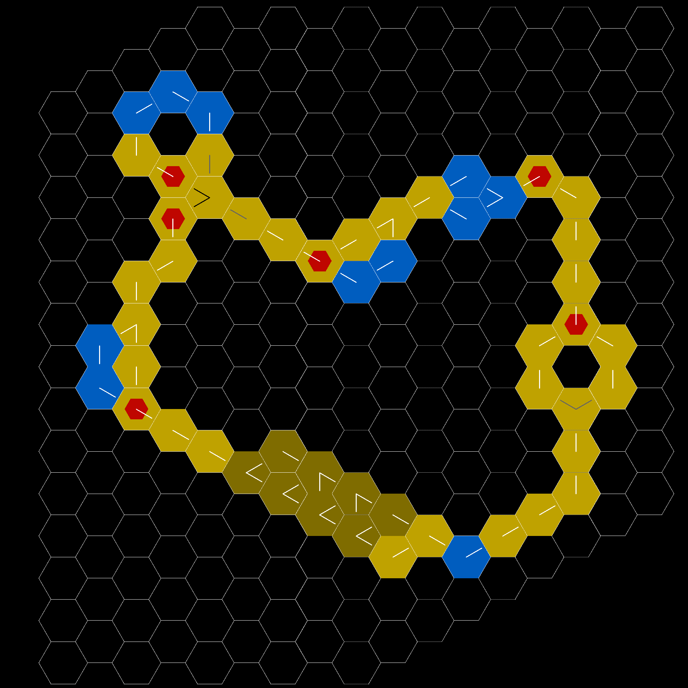
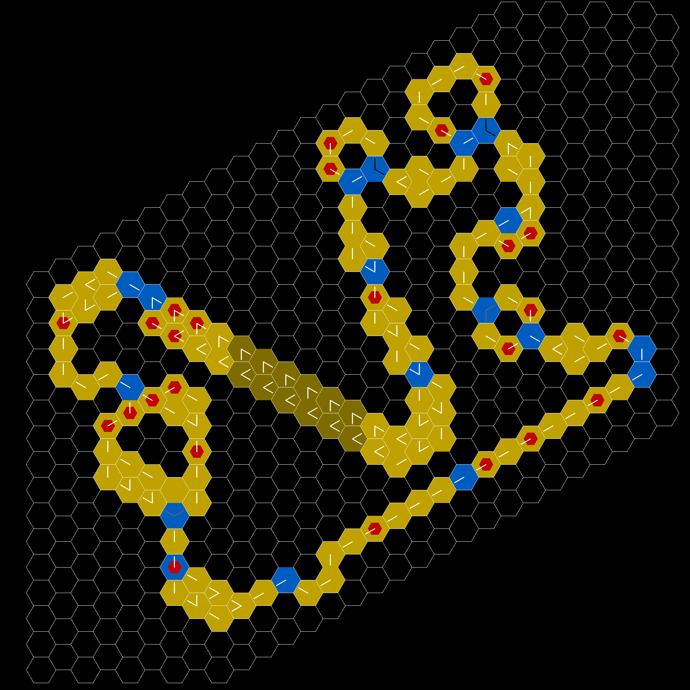

Overview of Racebile
How to draw a hex map
cx, cy, scale = 0, 0, 1
def raw_hax_coord(x, y):
xs, ys = 3 * cos(pi/3), sin(pi/3)
xi, yi = (xs * x, ys * (x + y * 2))
return xi, yi
def hex_coord(x,y):
xi,yi = raw_hax_coord(x,y)
xi = width // 2 + (xi-cx) * scale
yi = height // 2 + (yi-cy) * scale
return xi, yi
def draw_hex(xi, yi, color):
for k in range(round(-scale*cos(pi/3)), round(scale*cos(pi/3))+1):
m[round(xi+k)][round(yi+scale*sin(pi/3))] = color
m[round(xi+k)][round(yi-scale*sin(pi/3))] = color
for k in range(0, scale + 1):
corner_x, corner_y = scale*cos(pi/3), scale*sin(pi/3)
m[round(xi-corner_x-k*cos(pi/3))][round(yi-corner_y+k*sin(pi/3))] = color
m[round(xi-corner_x-k*cos(pi/3))][round(yi+corner_y-k*sin(pi/3))] = color
m[round(xi+corner_x+k*cos(pi/3))][round(yi-corner_y+k*sin(pi/3))] = color
m[round(xi+corner_x+k*cos(pi/3))][round(yi+corner_y-k*sin(pi/3))] = color
def draw_hex_grid():
for i in range(x_min-1, x_max+1+1):
for j in range(y_min-1, y_max+1+1):
xi, yi = hex_coord(i, j)
if not (scale <= xi < width-scale and scale <= yi < width-scale):
continue
color = (255, 255, 255)
draw_hex(xi, yi, color)The rules of the game
Technical values:
sips = {
"turn": 0,
"off_map": 0,
"gas": 0,
"bonk": 0,
"gear_box": 0,
"start_last": 0,
"end_first": 0,
"halfway_cheer": 0,
"goal_cheer": 0,
"koblingsfejl": 0,
"no_sips": 0
}Calculation:
total_sips = sips["turn"] +
(sips["gas"]-2 if sips["gas"] > 2 else 0) +
5.5 * sips["off_map"] +
sips["bonk"] +
11 * sips["gear_box"] +
sips["start_last"] +
sips["end_first"] +
sips["halfway_cheer"] +
sips["goal_cheer"] +
sips["koblingsfejl"]
if total_sips == 0:
sips["no_sips"] = 1
total_sips = 1Stats we want to check
- Average drinking is checked on 100.000 turns
- player pass goal is checked on 10.000 laps
Loop map

| Everyone goes to gear 3 | 8 | 7 | 6 | 5 | 4 | 3 | 2 | 1 |
|---|---|---|---|---|---|---|---|---|
| Average drinking | 4.288773125 | 4.189491428 | 4.097925 | 4.024711 | 3.961765 | 3.97142 | 4.097325 | 4.94921 |
| First player pass goal | 9.1454 | 9.1583 | 9.1791 | 9.2633 | 9.3687 | 9.5306 | 9.9845 | 11.864 |
| Range | (7-13) | (7-14) | (7-14) | (7-14) | (7-21) | (7-21) | (7-28) | (7-45) |
| Last player pass goal | 20.7261 | 19.8523 | 18.7916 | 17.9137 | 16.5963 | 15.4297 | 13.7969 | 11.864 |
| Range | (11-57) | (10-73) | (10-57) | (10-57) | (9-63) | (9-62) | (8-55) | (7-45) |
| Everyone goes to gear 2 | 8 |
|---|---|
| Average drinking | 2.72848125 |
| First player pass goal | 10.9374 |
| Range | (8-14) |
| Last player pass goal | 15.5947 |
| Range | (13-20) |
RTFM map

| Everyone goes to gear 3 | 8 | 7 | 1 |
|---|---|---|---|
| Average drinking | 5.493911875 | 5.278994285714286 | 5.2972 |
| First player pass goal | 7.8611 | 7.9117 | 9.7178 |
| Range | (5-12) | (5-12) | (6-17) |
| Last player pass goal | 14.0591 | 13.6372 | 9.7178 |
| Range | (10-24) | (10-26) | (6-17) |
Chikane

| Everyone goes to gear 3 | 12 | 8 | 7 | 1 |
|---|---|---|---|---|
| Average drinking | 4.737034583333333 | 4.36097625 | 4.282558571428571 | 5.1265 |
| First player pass goal | 19.26 | 19.1373 | 19.1295 | 21.2883 |
| Range | (14-26) | (14-25) | (14-27) | (14-32) |
| Last player pass goal | 30.0121 | 27.4463 | 26.8214 | 21.2883 |
| Range | (24-56) | (21-54) | (20-52) | (14-32) |